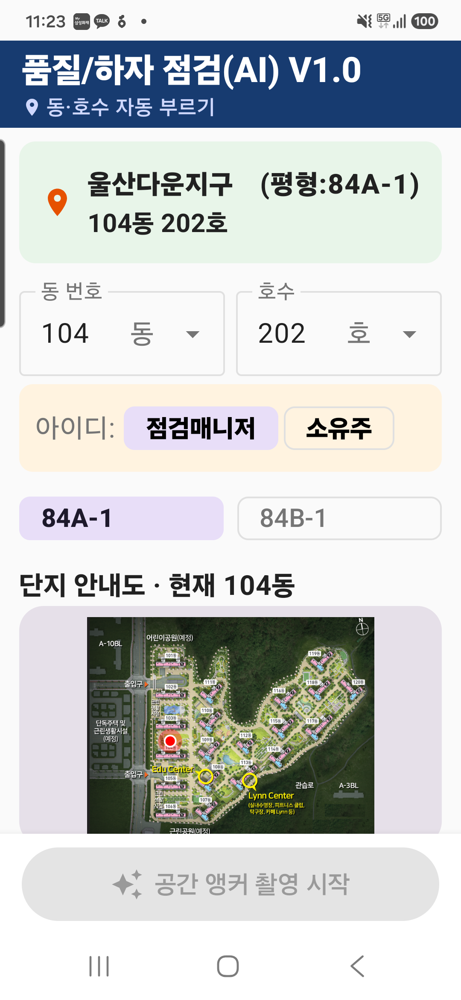
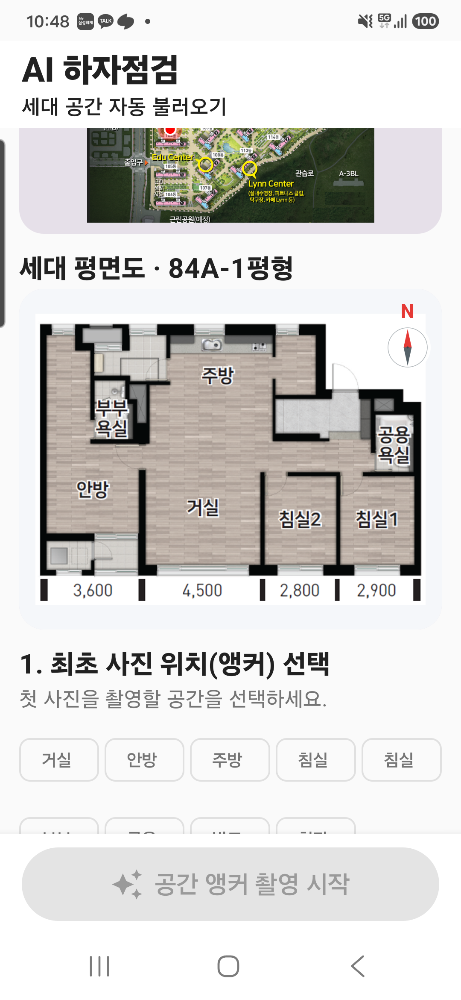
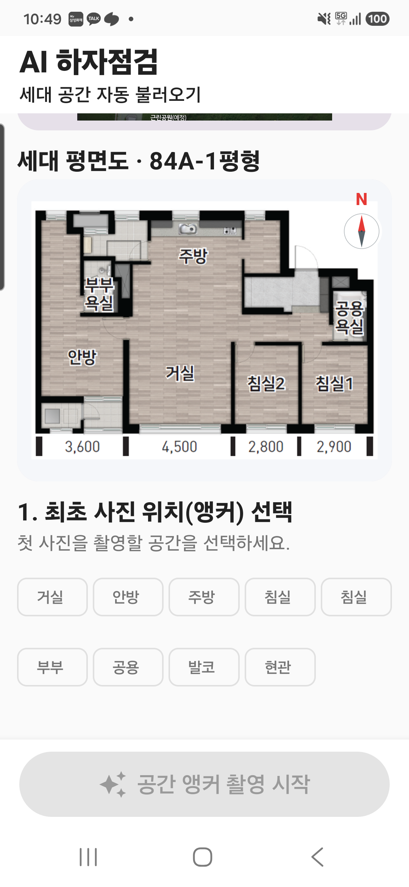
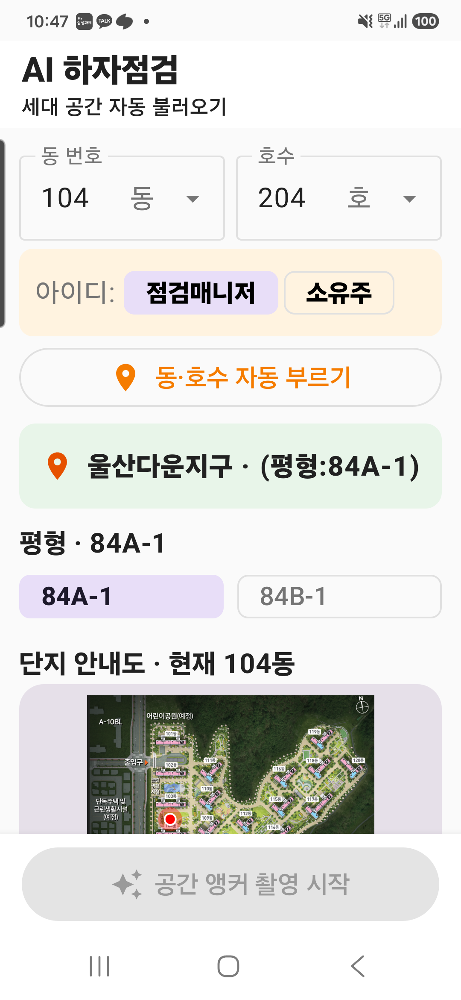

1. 설계 결론
입력자의 손을 최소화하면서도 이미지·위치·입주민 의견·AI 추천을 한 건의 검증 가능한 하자 데이터로 완성하는 현장 중심 UX로 확정한다.
모든 신규 하자는 촬영에서 시작
AI는 추천하며 점검자가 확정
통신 불량에서도 작업 지속
2. UX 원칙
동·호수, 평형, 도면과 공간은 DB·최근값·GPS 추천으로 먼저 채운다.
촬영, 판별, 위치, 의견, 분류, 저장의 책임을 화면별로 구분한다.
앵커, 하자 입력, 최종확인 & 저장 등 확정 용어를 모든 화면에서 동일하게 사용한다.
입주민 원문·촬영 원본·AI 추천·점검자 수정본을 서로 덮어쓰지 않는다.
3. 디자인 시스템
#173B70
상단·정보
#28558A
선택·기능
#EAF1FB
카드·입력
#F28C28
핵심 실행
#F4F7FB
전체 배경
사용 규칙
- 네이비: 앱 제목, 페이지 상단, 현황·정보 카드
- 오렌지: 새 하자 입력 등 현장 핵심 실행에만 사용
- 청록: 앵커, 빨강: 하자 핀, 초록: 완료, 황색: 확인 대기
- 최소 터치 높이 48dp, 주요 CTA 54~76dp, 모바일 본문 14sp 이상
4. 정보 구조 및 상단 단계 표시
| 단계 | 사용자 판단 | 저장 결과 |
|---|---|---|
| 인트로 | 누가, 어느 세대, 어느 공간을 점검하는가 | 세대·평형·도면·역할·공간 컨텍스트 |
| 촬영 | 이미지가 하자를 식별할 수 있는가 | 원본 이미지·방향·거리·센서값 |
| 위치 | 평면도의 어느 지점인가 | 정규화 좌표·앵커 기준 |
| 의견·AI | 어떤 하자이며 표현이 적절한가 | 원문·정제문·분류 후보·확신도 |
| 최종 | 저장 가능한 하자 기록인가 | 점검자 확정 데이터·동기화 큐 |
5. 인트로 화면
구성 순서
- 브랜드 헤더와 동·호수 자동 부르기
- 단지·평형·동호수 2단 정보 블록
- 직접 입력+풀다운 동·호수
- 점검매니저/소유주 인증
- 84A-1·84B-1 선택
- 단지안내도와 평면도
- 최초 공간 선택과 하단 이중 CTA
도면을 탭하면 전체 화면으로 열리며 하단의 화면 맞춤 / 축소 / 배율 / 확대 / 닫기 가로 메뉴와 1~5배 핀치 줌을 제공한다.
6. 로그인·DEMO 접근제어
| 인증 | DEBUG 테스트 계정과 당일 YYYYMMDD 규칙 확인 후 정상 점검 |
|---|---|
| DEMO | 화면·촬영 체험은 허용하되 서버 저장·전송 차단 |
| 운영 전환 | 서버 로그인, 만료 토큰, 역할 권한과 감사 로그 방식으로 교체 |
7. 이중 진입과 앵커 전략
앵커 촬영
선택한 공간에서 최초 기준 사진을 촬영하고 이후 하자를 입력한다. 위치 추적의 신뢰도가 가장 높은 표준 경로다.
하자 입력 직행
앵커 사진 없이 LIVE DETECTION으로 이동한다. 앵커는 거실 중앙 또는 최초 하자 위치를 사용한다.
| 거실 중앙 | 평면도 거실 메타데이터의 중앙 좌표를 세션 시작점으로 즉시 저장 |
|---|---|
| 최초 하자 입력 위치 | 첫 하자 핀을 최종 저장할 때 그 좌표와 촬영 방향을 세션 시작점으로 저장 |
8. 촬영 경험
앵커 촬영
- 센터 포커스 원과 중심점
- 인트로 공간을 기본 촬영 위치로 유지
- 필요 시 공간 재지정
- 사진앵커 방향·각도·거리 기록
LIVE DETECTION
- 사진 촬영이 신규 하자의 기본 입력
- 자동/수동 플래시
- 기본 무음, 촬영음 토글
- 하자 판별 불가 시 재촬영
- 프리뷰 아래 기울기·방향·거리 문구 제거
라이브 평면도는 화면 폭의 약 68%로 표시하며 현재 위치 방사형 표시, 앵커, 누적 하자 핀을 유지한다. 카메라 프리뷰가 중단되면 자동 복구와 수동 재연결 수단을 제공한다.
9. 촬영 이미지 판별·위치 확인
- 촬영 이미지가 화면의 주 콘텐츠가 되며 큰 별도 나침반은 제거
- 요약: 사진앵커: 남동향 SE120도 / 0.5m
- 이미지 품질이 낮거나 하자 식별이 불가능하면 AI 또는 점검자가 재촬영 요청
- 평면도 핀의 초기값은 자동 위치이며, 수동 탭 시 반드시 ‘위치 수정?’ 확인
- 평면도 비율 유지, 과도한 세로 확장 방지, 도면 아래 공간·AI 분석 추천 배치
10. 의견·STT·AI 분류
원본 영역
입주민 의견과 STT 원문을 수정본과 분리하여 끝까지 보존한다.
정제 영역
LLM이 문구를 표준화하되 점검자가 양방향 변환·수정·추가한다.
이미지 영역
CNN/비전 모델이 하자 유형·부위 후보와 신뢰도를 제공한다.
최종 영역
위치 > 하자부위 > 상세부위 > 공종 후보 순서로 점검자가 확정한다.
버튼 명칭은 모든 최종 화면에서 최종확인 & 저장으로 통일한다.
11. 품질하자점검 홈
- 세대 현황 카드는 네이비 계열, 새 하자 입력만 오렌지 핵심 CTA
- AI 하자분류 어시스턴트는 새 하자 입력 바로 아래에 최초 1회 표시
- 최근 하자 목록·전체 건수·상태를 압축 표시
- 세대 점검 마감 버튼은 통계·목록 최종 확인 후 활성 흐름 제공
- 다음 호수 진입 시 이전 세대 화면 상태와 임시 누적값 초기화
12. 하자 상세·세대 마감
| 하자 상세 | 축소 평면도, 사진, 위치·분류·의견을 한 페이지에 정돈 |
|---|---|
| 편집 | 수정 / 추가 사진 / 삭제의 버튼 폭과 문구가 잘리지 않도록 구성 |
| 최종 저장 | 점검자 추가 의견을 포함하여 ‘최종확인 & 저장’ 처리 |
| 세대 마감 | 전체 하자 목록·집계·평면도 누적 핀 검토 후 마감 |
| 다음 세대 | 직전 동·호수를 추천 초기값으로 사용하되 하자 목록·임시 상태는 초기화 |
13. 오프라인 우선 저장·동기화
- 사진 원본과 하자 메타데이터는 서버 응답 전에도 로컬에서 완결
- 전송 작업은 멱등 키와 재시도 정책 사용
- DEMO 모드에서는 동기화 트리거 차단
- 사용자에게 대기·전송중·완료·충돌 상태를 숨기지 않는다.
14. 상태·예외 설계
| 상태 | 화면 처리 |
|---|---|
| 도면 없음 | 기본 84A-1 도면과 기본 공간 메타데이터 사용, 대체 상태 표시 |
| 카메라 블랙아웃 | 프리뷰 자동 재연결, 복구 중 오버레이, 수동 재시작 |
| 하자 이미지 불명확 | AI/점검자 재촬영 판단, 기존 사진 임의 폐기 금지 |
| 네트워크 없음 | 로컬 저장 성공을 우선 알리고 동기화 대기 표시 |
| 인증 실패 | DEMO 배지와 서버 전송 차단 안내 |
| 키보드 표시 | IME 패딩과 스크롤로 최종 입력·저장 버튼 가림 방지 |
15. S25 Ultra 실기 화면 참고
아래 이미지는 실제 기기 실행 검증 캡처다. 이후 확정된 통합 컬러·하단 이중 버튼은 본 문서의 화면 명세를 최신 기준으로 한다.




16. 구현 검수 기준
P0 · 필수
- 카메라 장시간·화면 전환 후 블랙아웃 없음
- 모든 하자 로컬 저장 및 재시도 가능
- 입주민 원문과 AI/점검자 수정 분리
- 세대 전환 시 이전 상태 혼입 없음
P1 · 사용성
- 핵심 CTA가 첫 시선에 식별
- 도면 탭 확대와 핀 위치 확인 가능
- 키보드가 입력·저장 버튼을 가리지 않음
- 주요 문구가 S25 Ultra에서 잘리지 않음
검증 명령
.\gradlew.bat -p android :app:testDebugUnitTest :app:assembleDebug --no-daemon
현재 기준: 단위 테스트 및 디버그 APK 빌드 성공
17. 버전 기준
| v3.0 | 전체 화면 흐름과 사진·의견·AI 분류 기본 구조 |
|---|---|
| v3.3~3.9 | 실기 검토, 인트로·로그인, 도면 확대, 촬영음, 라이브 평면도 개선 |
| v4.0 | 통합 컬러시스템과 새 하자 입력 강조 |
| v4.1 | 인트로 앵커 촬영/하자 입력 이중 진입과 자동 앵커 전략 |
| v4.2 | 현재 통합 UI·UX 구현·검수 기준 |